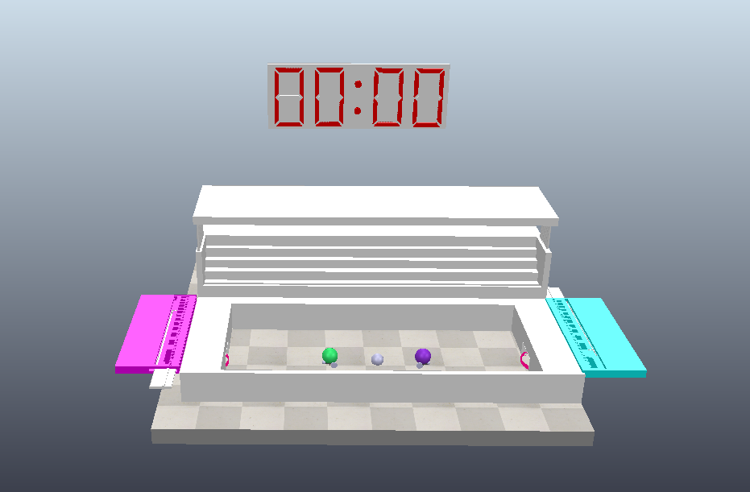

w11 <<
Previous Next >> Brython
pj2
由於原本採用齒輪設計的記分板無法使用，添加馬達於齒輪上嘗試作動失敗，因此參考別組記分板，使用改變特定對象的顏色來顯示數字。
pj2ag4_zmq_bubbleRob

記分板程式
function sysCall_init()
score1_1 = 0
score1_2 = 0
score1_3 = 0
score1_4 = 0
score2_1 = 0
score2_2 = 0
score2_3 = 0
score2_4 = 0
s0={1,1,1,0,1,1,1}
s1={0,0,1,0,0,1,0}
s2={1,0,1,1,1,0,1}
s3={1,0,1,1,0,1,1}
s4={0,1,1,1,0,1,0}
s5={1,1,0,1,0,1,1}
s6={1,1,0,1,1,1,1}
s7={1,0,1,0,0,1,0}
s8={1,1,1,1,1,1,1}
s9={1,1,1,1,0,1,1}
s={s0,s1,s2,s3,s4,s5,s6,s7,s8,s9}
c0 = sim.getObject('./c0')
c1 = sim.getObject('./c1')
sim.setShapeColor(c0, nil, sim.colorcomponent_ambient_diffuse, {1, 0, 0})
sim.setShapeColor(c1, nil, sim.colorcomponent_ambient_diffuse, {1, 0, 0})
score(0,'a')
score(0,'b')
score(0,'c')
score(0,'d')
sensor = sim.getObject('./sensor1')
sensor = sim.getObject('./sensor2')
end
function score(x,y)
for i=0 ,9,1 do
if (x==i)then
for j = 0,6,1 do
local part = sim.getObject('./'..y..''..j..'')
if (s[i+1][j+1]==1) then
sim.setShapeColor(part, nil, sim.colorcomponent_ambient_diffuse, {1, 0, 0})
else
sim.setShapeColor(part, nil, sim.colorcomponent_ambient_diffuse, {1, 1, 1})
end
end
end
end
end
function sysCall_actuation()
sensor1 = sim.getObject('./sensor1')
sensor2 = sim.getObject('./sensor2')
result1=sim.readProximitySensor(sensor1)
result2=sim.readProximitySensor(sensor2)
if(score1_1<10)then
if(result1>0)then
score1_2 = score1_1+1
if(score1_2==10 and score1_3<9)then
score1_2=0
score1_4=score1_3+1
end
local ball = sim.getObject('/Sphere')
sim.setObjectSpecialProperty(ball, sim.modelproperty_not_detectable)
score(score1_4,'a')
score(score1_2,'b')
score1_1=score1_2
score1_3=score1_4
end
else
sim.pauseSimulation()
end
if(score2_1<10)then
if(result2>0)then
score2_2 = score2_1+1
if(score2_2==10 and score2_3<9)then
score2_2=0
score2_4=score2_3+1
end
local ball = sim.getObject('/Sphere')
sim.setObjectSpecialProperty(ball, sim.modelproperty_not_detectable)
score(score2_4,'c')
score(score2_2,'d')
score2_1=score2_2
score2_3=score2_4
end
else
sim.pauseSimulation()
end
end
w11 <<
Previous Next >> Brython